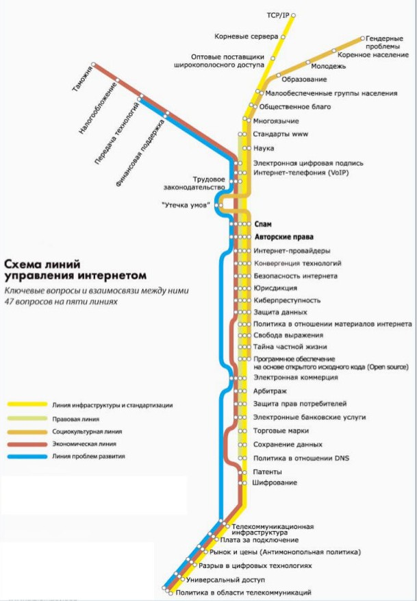
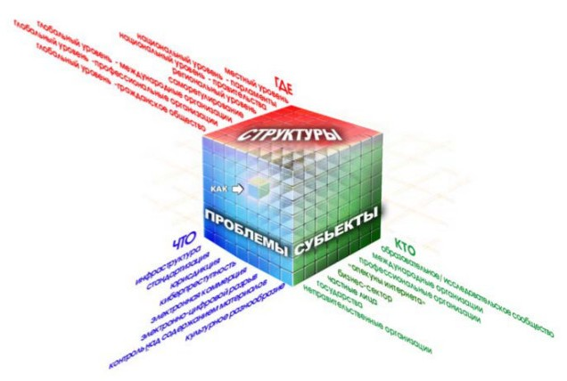

| Домой | Введение | Чем управляют | Как управляют | Кто участвует | Заключение | Ссылки | Дополнительно... |
Сегодня:
|
Карта управления Интернетом Управление интернетом - сложная новая область, требующая предварительного "нанесения на карту" и классификации. Сложность управления интернетом связана с его междисциплинарной природой, охватывающей технологию, общественно-экономические вопросы, развитие, право и политику. Составление "карты" управления интернетом имеет как научную, так и практическую важность. С научной точки зрения, появляется все больше исследований по вопросам управления интернетом, однако они в основном посвящены ICANN и другим проблемам, рассматриваемым в рамках "узкого" похода. По-прежнему отсутствует общая теоретическая схема, в особенности применительно к международным аспектам управления интернетом. Практическая потребность в классификации ярко проявилась в процессе WSIS. Многим участникам, включая государства, было непросто разобраться во всех сложностях управления интернетом. Составление концептуальной схемы проблемного поля должно способствовать повышению эффективности переговоров в контексте WSIS, а также других многосторонних переговоров по вопросам, связанным с интернетом. Куб управления Интернетом Ось "ЧТО" связана с вопросами, рассматриваемыми в рамках управления Интернетом (инфраструктура, авторское право, тайна частной жизни и т. д.). Она является воплощением многодисциплинарности данного подхода. На оси "КТО" представлены основные ДЕЙСТВУЮЩИЕ ЛИЦА (государство, международные организации, гражданское общество, частный сектор). Эта сторона представляет множество участников процесса (многосторонний подход). Ось "ГДЕ" характеризует те структуры, в рамках которых могут решаться вопросы, связанные с Интернетом (саморегулирование, местный, национальный, региональный и глобальный уровни). Это иллюстрация многоуровневого подхода к управлению Интернетом. Пересекаясь между собой, три оси куба образуют своеобразные перекрестки, для каждого из которых можно задать вопрос "КАК?". Каждое из таких пересечений помогает понять, как нужно регулировать тот или иной вопрос - с точки зрения и когнитивно-правовых технологий (аналогия), и инструментария ("мягкое право", соглашения, декларации). Так, одно из таких пересечений помогает понять, КАК гражданское общество (КТО) на национальном уровне (ГДЕ) должно действовать в отношении вопросов, связанных с тайной частной жизни (ЧТО). Вне куба рассматривается компонент "КОГДА". Координационный центр национального домена сети Интернет (Координационный центр домена .RU)Организация, созданная в 2001 году для выработки правил регистрации доменных имен в доменах .RU и .РФ, аккредитации регистраторов и исследования перспективных проектов, связанных с развитием российского национального домена. Организации-учредители: общественно-государственное объединение "Ассоциация документальной электросвязи" (АДЭ), "Союз Операторов Интернет" (СОИ), Региональная организация "Центр интернет-технологий" (РОЦИТ) и Российский НИИ развития общественных сетей (РосНИИРОС). В январе 2006 г. сведения о Координационном центре домена .RU были занесены в базу данных IANA. В марте 2007 года Координационный центр домена .RU формализовал отношения российской национальной регистратуры с ICANN путем обмена официальными письмами. На сегодняшний день в ведении Координационного центра находятся вопросы, связанные с функционированием двух национальных доменов: домена .RU и нового кириллического домена .РФ. Координационный центр официально стал администратором домена .РФ 21 января 2010 г. после успешного прохождения процедуры Fast Track и утверждения ICANN заявки на домен .РФ. Домен .РФ - Первый кириллический домен в мировом Интернет-пространстве2010 год стал для России годом старта нового национального домена - домена .РФ. 21 января 2010 года ICANN сообщила о том, что заявка России на делегирование IDN-домена .РФ по процедуре Fast Track удовлетворена. На сегодняшний день это единственная заявка на кириллице. В мае 2010 года ожидается техническое делегирование нового домена .РФ, когда IANA разместит сведения о домене .РФ на корневых серверах мировой системы доменных имен (DNS). Наряду с тремя арабскими государствами Российская Федерация станет одной из первых стран, которые начнут использование нелатинских доменов в интернет-пространстве. Именно в России будут внедряться те технические новшества, благодаря которым домены с использованием национальных (нелатинских) алфавитов будут доступны всему мировому интернет-сообществу. Идею появления домена на кириллице с самого начала поддержал Президент Российской Федерации Дмитрий Медведев. Он сказал: "Мы должны сделать все от нас зависящее, чтобы добиться присвоения доменных имен на кириллице. Это символическая значимость русского языка, и у нас неплохие шансы добиться соответствующего решения". Выбор аббревиатуры будущего домена - .РФ - обусловлен обязательным наличием хотя бы одной буквы алфавита, являющейся отличной от привычной всем кодировки ASCII. Для России это уникальный кириллический символ "Ф". Кроме того, это обозначение имеет важное смысловое значение для жителей Российской Федерации (РФ). Русский язык является пятым в мире по распространенности, при этом 160 миллионов человек считают его родным. Чтобы запомнить название сайта на кириллице, русскоговорящему человеку требуется менее 0,8 секунд - в отличие от названия сайта, написанного латиницей, где русскоговорящий пользователь тратит на запоминание интернет-адреса в среднем около 3 секунд. Проведенные Координационным центром национального домена сети Интернет опросы показали, что поддерживают внедрение нового национального домена .РФ более 60% российский интернет-пользователей, а зарегистрировать собственное доменное имя в домене .РФ собирается каждый пятый. При этом .РФ не становится конкурентом традиционному латинскому домену .RU, он лишь позволяет сделать Интернет более доступным, удобным, эффективным и "повседневным" для всех и каждого, в том числе и для тех, кто в своей повседневной жизни никогда не пользуется латинским алфавитом. |
|
Домой | Введение | Чем управляют | Как управляют | Кто участвует | Заключение | Ссылки | Дополнительно... |
| Copyright © 2012 My Web-design Corp. All Rights Reserved |